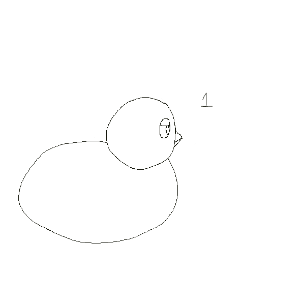

GIF #1:
GIF #2:
.gif)
Creating my two GIFs was both a fun and challenging process. Initially, the technical aspects felt overwhelming as I’ve never animated anything before. Learning to manipulate frames, adjust timing, figure out the difference between a layer and a frame, and apply the puppet warp tool to an image required a lot of patience and experimentation. I found myself struggling to get the subtle motion of the duck’s blink to appear smooth, and similarly, making the puppet warp adjustments to my own image feel expressive without looking too distracting was tricky. The process became more enjoyable once I took smaller steps to understand why I had to use certain tools rather than just aiming to finish the assignment. Breaking the tasks into smaller steps, like focusing first on individual frames before considering the finished look allowed me to better understand how motion works in GIFs. It also helped me see the potential for playful and creative expression in interactive design. By using and adding the new information I learned, the duck’s simple blink and my warped self-image became more than just homeworks, they were small experiments in animation and visual storytelling. Through this assignment, I not only strengthened my technical skills in Photoshop but also gained a deeper appreciation for the artists who practice animation. I finally understood why it takes so long for animated movies to be completed. There is so much work, patience, and dedication that goes into movements that an observer would think are unintentional or low-effort, when really these “simple” movements could’ve taken hours to perfect.
HOME